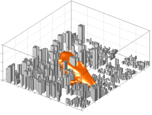

  <div id="home">
    
    
    <div id="text">The Convection and Urban Meteorology Group is one of research laboratories at the School of Earth and Environmental Sciences of Seoul National University. We aim at the better understanding of atmospheric convection and urban effects on weather, climate, and the environment. For this, we study every side of fluid or atmospheric phenomena that attract our attention through linear and weakly nonlinear theoretical approaches and nonlinear numerical-model simulations. We welcome motivated and able students and collaboration.</div>
  </div>
